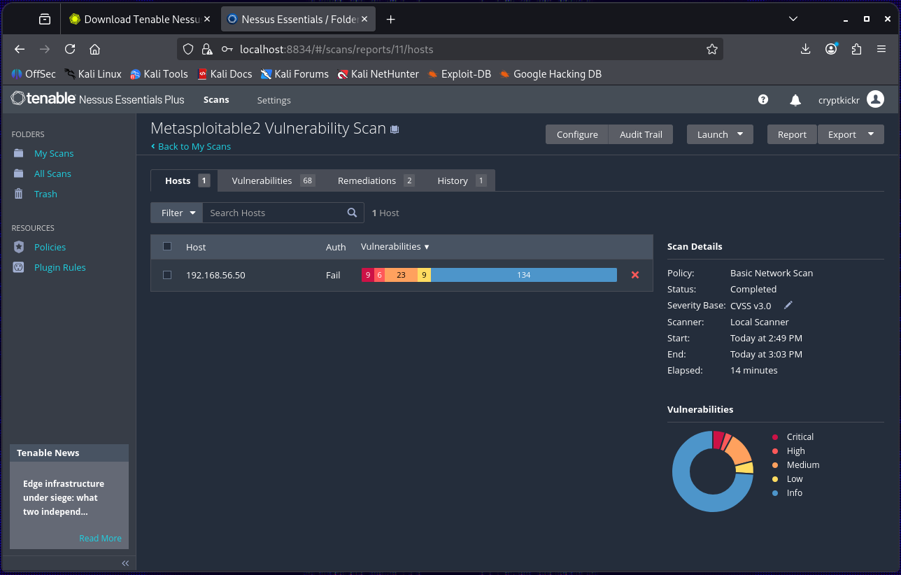
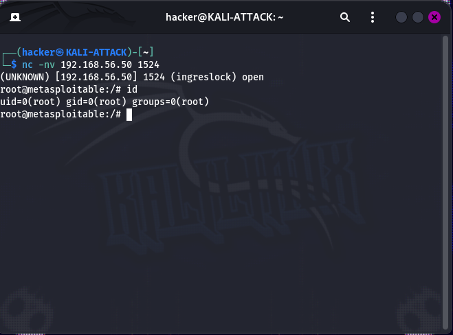
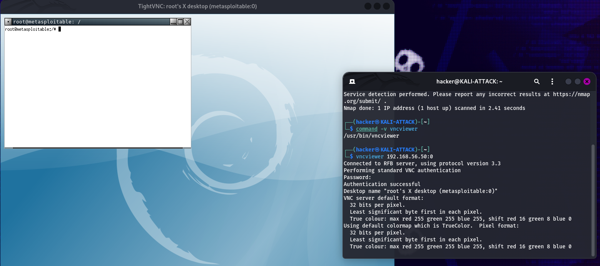
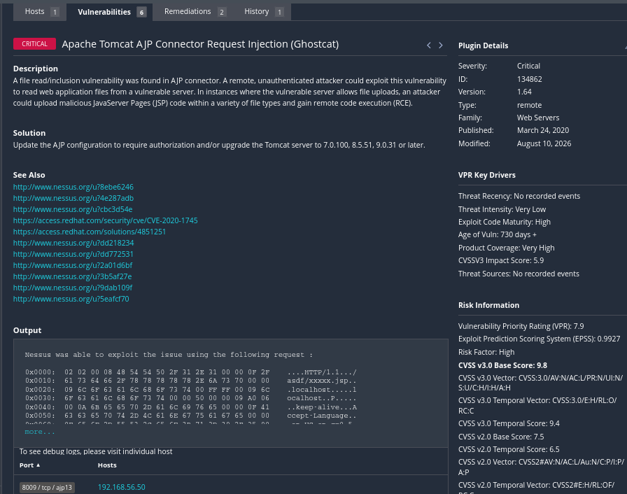
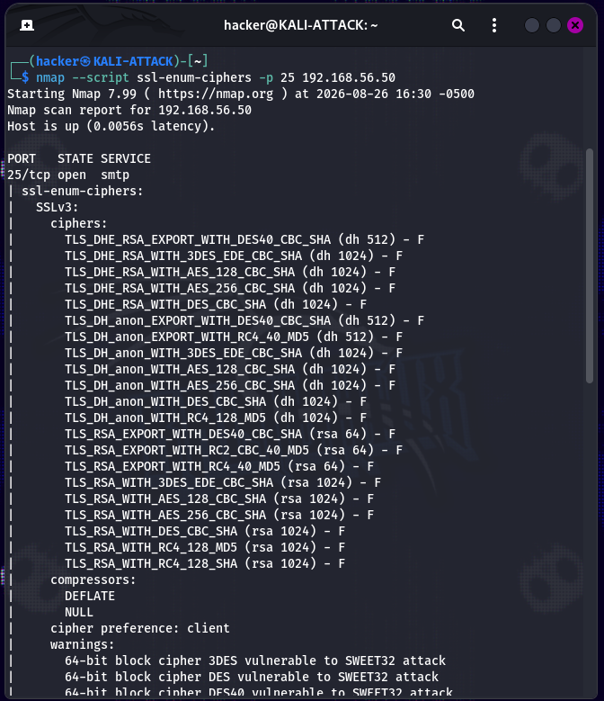
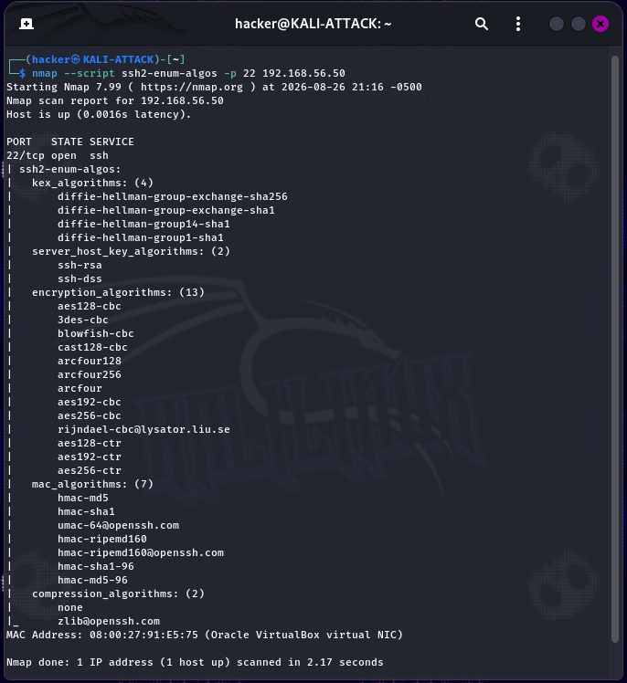

Overview
This lab builds upon the isolated cybersecurity environment established in Lab 1, the network reconnaissance performed in Lab 2, and the packet analysis performed in Lab 3.
Nessus was used to perform broad vulnerability discovery against Metasploitable 2. The resulting findings were then investigated and independently validated using tools including Nmap, Netcat, Nping, VNC Viewer, and service-specific enumeration techniques.
The assessment was performed entirely within the isolated Host-Only network. No production systems or external hosts were targeted.
Objectives
Vulnerability Discovery
Perform a Nessus vulnerability scan against the intentionally vulnerable target.
Severity Analysis
Review findings across Critical, High, Medium, Low, and Informational severity levels.
Plugin Analysis
Examine Nessus plugin descriptions, evidence, and remediation guidance.
Independent Validation
Reproduce selected findings using tools outside the vulnerability scanner.
Service Correlation
Correlate vulnerability findings with services previously identified during Nmap reconnaissance.
Safe Assessment
Distinguish vulnerability discovery from unnecessary exploitation during validation.
Lab Environment
| Component | Details |
|---|---|
| Hypervisor | Oracle VirtualBox |
| Scanner | KALI-ATTACK — 192.168.56.40 |
| Primary Target | METASPLOITABLE2 — 192.168.56.50 |
| Network | 192.168.56.0/24 Host-Only |
| Vulnerability Scanner | Nessus |
| Supporting Tools | Nmap, Netcat, Nping, VNC Viewer |
| Operating System | Kali GNU/Linux 2026.2 |
Assessment Process
Target Verification
Verified connectivity to the intended Metasploitable 2 target before scanning.
Network Troubleshooting
Investigated a Windows 11 discovery issue rather than assuming the system was unavailable.
Nessus Scanning
Performed broad vulnerability discovery and reviewed findings by severity and plugin.
Finding Investigation
Correlated scanner findings with exposed services identified during earlier reconnaissance.
Hands-On Validation
Independently validated representative findings using Nmap, Netcat, Nping, and VNC Viewer.
Evidence Analysis
Distinguished confirmed conditions from findings supported primarily by version or scanner evidence.
01 — Nessus Vulnerability Scan
Nessus performed broad vulnerability discovery against Metasploitable 2 and identified findings across multiple severity levels.

Nessus vulnerability scan summary showing findings across multiple severity levels.
Critical
Multiple high-impact weaknesses were identified, including exposed services and weak authentication.
High
Serious service and configuration vulnerabilities were identified across the target.
Medium
Multiple cryptographic, authentication, protocol, and service weaknesses were reported.
Low & Informational
Legacy protocol weaknesses, service information, versions, and configuration characteristics were also identified.
02 — Exposed Root Shell
Nessus identified a command shell exposed on TCP port 1524.
The scanner demonstrated that the service allowed execution
of the id command with root privileges.
The finding was independently validated from Kali using Netcat.

Netcat connection to TCP 1524 demonstrating the exposed shell and root-level privileges.
Validation
nc -nv 192.168.56.50 1524
id
Port
1524/tcp
Access
Unauthenticated interactive shell
Privilege
uid=0(root)
Validation
Confirmed independently
03 — Weak VNC Authentication
Nessus identified a VNC service on TCP port 5900 and reported successful authentication using a weak password.
The service was independently identified with Nmap and the finding was validated by establishing a graphical VNC session.

Successful VNC connection demonstrating that the weak credential provided actual access to the target.
Port
5900/tcp
Service
VNC protocol 3.3
Validation
Graphical session established successfully
04 — AJP Information Disclosure
Nessus identified a vulnerability affecting the Apache JServ Protocol service on TCP port 8009. The plugin demonstrated that the service could be used to request application configuration information.

Nessus plugin evidence showing the AJP request and returned WEB-INF/web.xml content.
Port
8009/tcp
Service
Apache JServ Protocol
Evidence
Nessus demonstrated retrieval of application configuration information.
Validation
Service and scanner evidence confirmed the condition; unnecessary exploitation was not performed.
05 — SSL/TLS Weaknesses
Nessus identified numerous SSL/TLS configuration weaknesses.
Nmap's ssl-enum-ciphers script was used to
independently enumerate the supported protocols and ciphers.

Nmap SSL/TLS enumeration demonstrating legacy protocols and weak cryptographic configurations.
Legacy Protocols
SSLv3 and TLS 1.0 were supported.
Weak Ciphers
Legacy algorithms including RC4, 3DES, DES, and export ciphers were identified.
Weak Key Exchange
Weak and export-grade Diffie-Hellman parameters were identified.
Validation
The protocol configuration supported multiple related Nessus findings.
06 — SSH Cryptographic Weaknesses
Nessus identified multiple weak SSH cryptographic algorithms. Nmap was used to enumerate the server's supported key exchange, cipher, and MAC algorithms.

Nmap SSH algorithm enumeration showing legacy key exchange, cipher, and MAC algorithms.
Key Exchange
Legacy SHA-1-based Diffie-Hellman algorithms were supported.
Ciphers
Multiple CBC and legacy stream ciphers were available.
MACs
Legacy MD5 and SHA-1-based MAC algorithms were supported.
Validation
One algorithm enumeration supported several related Nessus findings.
Validation Approach
The assessment deliberately separated vulnerability discovery from hands-on validation. Scanner findings were correlated with actual services and, where practical, independently reproduced using other tools.
| Finding | Evidence | Result |
|---|---|---|
| Port 1524 Root Shell | Netcat + id | Confirmed |
| VNC Weak Password | VNC Viewer | Confirmed |
| AJP Vulnerability | Nessus proof + Nmap | Confirmed |
| BIND Vulnerabilities | Nmap version detection | Version confirmed |
| Samba Badlock | Nmap SMB/OS discovery | Service/version confirmed |
| NFS Export | showmount | Confirmed |
| SSL/TLS Weaknesses | ssl-enum-ciphers | Confirmed |
| ICMP Timestamp | Nping | Confirmed |
| SSH Weak Algorithms | ssh2-enum-algos | Confirmed |
Key Findings
Scanner Coverage
Nessus provided broad visibility into vulnerabilities across the intentionally vulnerable target.
Hands-On Evidence
Representative findings were independently validated using tools outside Nessus.
Service Correlation
Many Nessus findings corresponded directly to services previously identified during Nmap reconnaissance.
Related Findings
Multiple Nessus plugins sometimes represented different aspects of the same underlying service or configuration.
Troubleshooting
Windows 11 Missing from Discovery
The Windows 11 client did not initially appear in the expected network discovery results. The VM's network connectivity and Host-Only configuration were investigated before continuing with the assessment.
This reinforced the importance of verifying network connectivity and host discovery before interpreting a vulnerability scan as complete.
Lessons Learned
- Vulnerability scanners provide broad coverage but should not automatically be treated as proof of exploitability.
- Scanner findings should be correlated with actual services and software versions.
- Nmap is useful for independently validating service-level vulnerability findings.
- Netcat can demonstrate the practical impact of exposed network services.
- Nping can generate specialized packets for controlled protocol validation.
- A single technical condition can produce multiple related Nessus plugins.
- Grouping related findings prevents redundant testing and documentation.
- Safe validation is preferable to unnecessary exploitation when existing evidence is sufficient to establish a finding.
MITRE ATT&CK Mapping
| Tactic | Technique | ID |
|---|---|---|
| Discovery | Network Service Discovery | T1046 |
| Discovery | Remote System Discovery | T1018 |
| Credential Access | Unsecured Credentials | Credential Access |
| Initial Access | Exploit Public-Facing Application | T1190 |
| Execution | Command and Scripting Interpreter | Execution |
| Collection | Network Sniffing | T1040 |
These mappings describe how the observed weaknesses could relate to adversary behavior. The lab itself remained confined to the intentionally vulnerable training environment.
Technical Documentation
The complete technical documentation contains the full Nessus findings, plugin analysis, additional screenshots, validation commands, troubleshooting, and supporting evidence.
View Full Lab 04 Documentation on GitHub